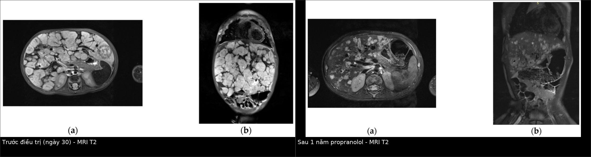
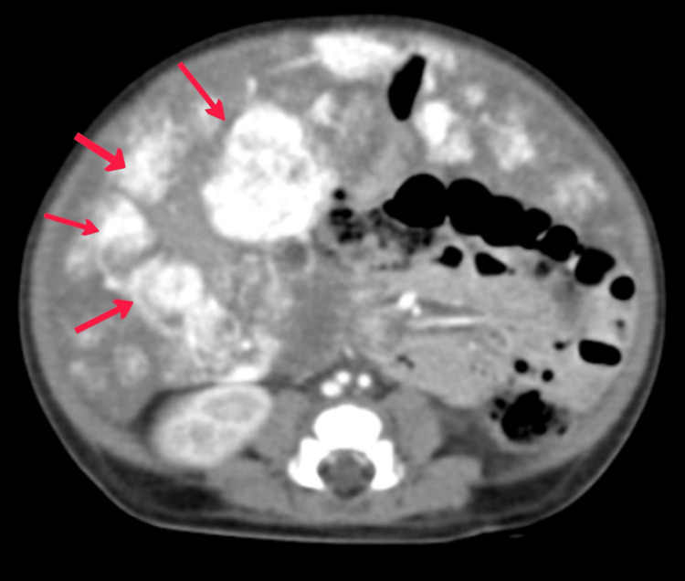
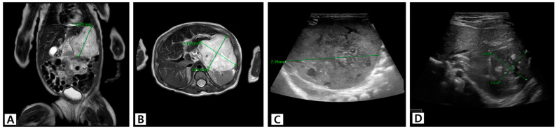

687 — Theo dõi & điều trị IHH sau can thiệp: sirolimus, nút mạch, ghép gan & ngừng propranolol / Post-intervention management of infantile hepatic hemangioma
Tags: pattern:khoi-gan-nhi vung:gan score:IHH-response protocol:US-MRI-theo-doi protocol:TAE incidentaloma:khoi-gan-nhi
Mức chắc chắn (certainty): tổng hợp y văn (literature synthesis) — tổng hợp từ các nghiên cứu đoàn hệ, ca nguyên văn và review mở; các ca minh họa là ca nguyên văn có ảnh CC BY, ghi rõ PMCID từng ảnh. Không có thử nghiệm ngẫu nhiên lớn cho phác đồ sau can thiệp.
Bài này nối tiếp 667. 667 trả lời “chẩn đoán & điều trị bước đầu”; bài này trả lời “sau khi đã dùng propranolol/TAE/sirolimus thì theo dõi gì, khi nào leo thang, khi nào ngừng thuốc và khi nào ghép gan”.
1. Tổng quan bệnh học – cơ chế hình ảnh
- U mạch máu gan nhũ nhi (infantile hepatic hemangioma, IHH) là u mạch máu lành tính GLUT-1 dương, xuất hiện/tăng sau sinh, có pha tăng sinh rồi pha thoái triển. Khác với u mạch máu bẩm sinh (congenital hepatic hemangioma, CHH) — đã có đủ lúc sinh, GLUT-1 âm, thường không đáp ứng propranolol (bài 667).
- Diễn tiến tự nhiên: tăng nhanh trong 8–12 tháng đầu, sau đó thoái triển chậm trong 4–7 năm; vì vậy phần lớn trẻ không cần điều trị. Tuy nhiên thể lan tỏa (diffuse) có thể gây suy tim cung lượng cao, suy giáp tiêu thụ, hội chứng khoang bụng, giảm tiểu cầu/rối loạn đông máu và tử vong.
- Vì sao phải theo dõi sau can thiệp? Thuốc/can thiệp làm giảm shunt và thể tích u, nhưng:
- U có thể còn mô sống ở rìa hoặc trong vùng hoại tử/xơ → cần phân biệt mô xơ không ngấm với nốt còn mạch nuôi;
- Rebound sau ngừng propranolol;
- Biến chứng của chính can thiệp (TAE, sirolimus, mổ, ghép gan);
- Suy giáp tiêu thụ có thể kéo dài dù u nhỏ lại.
- Cơ chế hình ảnh (TẠI SAO):
- IHH là hồ mạch chảy chậm: trên siêu âm Doppler là khối tăng hồi âm/không đồng nhất có mạch trong u; trên MRI khối T1W tối, T2W sáng do nhiều nước/hồ mạch (không có mỡ nên không mất tín hiệu trên fat-sat); trên CEUS/MRI động ngấm viền nốt ngoại vi không liên tục → đầy dần vào trung tâm (centripetal fill-in) vì thuốc vào hồ mạch chậm.
- Sau điều trị, mô u thay bằng xơ/collagen và vôi hóa → giảm tín hiệu T2, giảm/không ngấm thuốc; mô u còn sống vẫn T2 sáng và ngấm thuốc.
- Vôi hóa gặp nhiều ở CHH và sau điều trị/hoại tử; trên CT là ổ tăng đậm độ > 200 HU, không nên nhầm với mảnh xương/dị vật.
- Ngưỡng định lượng đáng nhớ:
- U lớn (large HH): > 4 cm — nhóm có nguy cơ biến chứng, cần điều trị chứ không chỉ theo dõi.
- Trong đoàn hệ 87 trẻ: 12 trẻ được điều trị; 5,7% có suy tim; kết cục hoàn toàn 60,9% – một phần 27,6% – không đáp ứng 11,5%; theo dõi trung vị 581 ngày.
- AFP trung vị lúc chẩn đoán ở nhóm điều trị 76.818,7 ng/mL so với 627,2 ng/mL ở nhóm quan sát; AFP phải giảm dần — AFP tăng là cờ đỏ của hepatoblastoma.
- Propranolol: khởi đầu 1 mg/kg/ngày, tăng tới 2–3 mg/kg/ngày; duy trì ít nhất 6 tháng và đến 12 tháng tuổi.
- Rebound sau ngừng propranolol: 10–25%, có thể xuất hiện muộn tới 6 tháng sau khi ngừng; nguy cơ cao nhất nếu ngừng < 12 tháng tuổi (đặc biệt < 9 tháng), thấp nhất khi ngừng 12–15 tháng tuổi.
- Sirolimus: liều tham chiếu 1,6 mg/m²/ngày (đoàn hệ Hàn Quốc) hoặc 0,45–0,5 mg/m² khởi đầu ở sơ sinh với nồng độ đáy 7–12 ng/mL; một số phác đồ dùng 0,8 mg/m² × 2 lần/ngày, đích 5–15 ng/mL.
- Ghép gan: chỉ là cứu cánh cuối cho thể lan tỏa/không cắt được, thất bại với thuốc và nút mạch; trong các loạt nhỏ, 4/4 và 3/3 trẻ ghép còn sống (theo dõi 6–168 tháng), nhưng 4 ca tử vong khi đang chờ ghép trong một loạt 31 ca.

Trái: MRI T2 ngày 30 của điều trị — nhiều ổ lớn, bờ gồ ghề, thay gần hết hai thùy gan. Phải: sau 1 năm propranolol — tổn thương nhỏ lại, gan giảm kích thước, cấu trúc bên trong vẫn không đồng nhất. Nguồn: Tukhvatullina RR et al., Children 2026 (PMC13297738, Fig. 1–2), CC BY 4.0. Ảnh ghép letterbox giữ tỷ lệ.2. Mẫu hình + chẩn đoán phân biệt theo kiểu đáp ứng (gamut)
Sau can thiệp, đừng chỉ hỏi “u nhỏ chưa?” — hãy phân loại kiểu đáp ứng để quyết định bước tiếp:
- Đáp ứng hoàn toàn (complete resolution): không còn thấy tổn thương trên siêu âm; AFP/TSH về bình thường; không còn shunt trên siêu âm tim.
- Đáp ứng một phần (partial resolution): tổn thương còn thấy nhưng nhỏ hơn, mạch trong u giảm, lâm sàng cải thiện. Ca Patient 10: khối 7,2 × 5,2 × 7,4 cm giảm còn 3,7 × 3,2 × 2,8 cm sau sirolimus.
- Không đáp ứng/ổn định: kích thước không đổi hoặc tăng nhẹ, còn shunt/triệu chứng.
- Rebound: u tăng lại sau giảm liều/ngừng propranolol, thường trong 10–25%, có thể sau 6 tháng.
- Biến chứng do can thiệp: hoại tử gan, áp-xe, hẹp/tắc đường mật sau TAE; loét miệng, tăng men gan, tăng triglyceride, giảm tế bào máu do sirolimus; hẹp miệng nối, thải ghép, nhiễm trùng sau ghép gan.
Gamut theo hình thái còn lại trên MRI/CEUS:
- Nốt T2 sáng + ngấm viền nốt → đầy dần: mô IHH còn sống → tiếp tục/leo thang điều trị.
- Vùng T2 tối + không ngấm + vôi hóa: xơ/hoại tử → theo dõi, không đánh giá là “u còn sống”.
- Nốt mới trong gan, AFP tăng nhanh: hepatoblastoma hoặc u ác khác → không được mặc định là “IHH tái phát”.
- Ổ dịch/quanh ổ hoại tử, sốt, đau bụng sau TAE: áp-xe/hoại tử đường mật → cần dẫn lưu/kháng sinh, không phải “u to lên”.
- Gan to + cổ trướng + suy gan sau ghép: biến chứng ghép (hẹp miệng nối, thải ghép, tắc mạch gan).
Mnemonic “R-T-E-S”: Residual (mô sống), Toxicity (độc tính thuốc), Escalation (khi nào leo thang), Stop (khi nào ngừng).
3. Bảng so sánh phân biệt (ma trận đối chiếu)
| Thực thể/chiến lược | Hình ảnh & theo dõi điển hình | Chốt vào (rule-in) | Chốt loại (rule-out) | Gợi ý xác nhận |
|---|---|---|---|---|
| Tiếp tục propranolol | US: u nhỏ dần, mạch trong u giảm; MRI: giảm T2, giảm ngấm | Đang đáp ứng, không có biến chứng, còn trong tuổi tăng sinh | U tăng lại dù đủ liều 2–3 mg/kg/ngày → không đơn thuần là “chưa đủ thời gian” | Cân nặng, liều mg/kg/ngày, ECG, glucose, US 2–4 tuần/lần giai đoạn đầu |
| Sirolimus | MRI/US: giảm kích thước, giảm mạch; không có dấu hiệu ác tính | Thất bại/không dung nạp propranolol ± prednisolone; u còn triệu chứng | U đã xơ hóa/không ngấm hoàn toàn → không cần thêm thuốc | Nồng độ đáy sirolimus, công thức máu, men gan, lipid, loét miệng |
| Nút mạch (TAE) | Chụp mạch: giảm shunt; CT/MRI sau: vùng hoại tử không ngấm, có thể vôi hóa | Shunt lớn gây suy tim không kiểm soát; cầu nối trước mổ/ghép | Tổn thương đã hoại tử toàn bộ, không còn shunt → TAE thêm không lợi | Chụp mạch chọn lọc, đánh giá tưới máu gan còn lại, chức năng gan |
| Phẫu thuật cắt u | CT/MRI: khối khu trú, còn mô lành đủ để cắt | Khu trú + suy tim/biến chứng không đáp ứng thuốc, còn gan lành | Lan tỏa/thay gần hết nhu mô → cắt không thể | Thể tích gan còn lại, PRETEXT-like assessment, siêu âm tim |
| Ghép gan | Gan nhận: tưới máu, đường mật, không thải ghép | Lan tỏa/không cắt được + suy gan/suy tim dai dẳng dù thuốc + TAE | Còn khả năng kiểm soát nội khoa hoặc còn mô gan lành để cắt | Đánh giá đa chuyên khoa, chờ ghép, chống chỉ định nhiễm trùng |
Phân biệt “mô xơ sau điều trị” với “u còn sống”
- Mô xơ: T2 tối, không ngấm hoặc ngấm rất ít, có thể vôi hóa; kích thước ổn định qua nhiều lần chụp.
- U còn sống: T2 sáng, ngấm viền nốt/đầy dần, kích thước tăng hoặc không giảm; có thể kèm AFP không giảm như kỳ vọng.
- Áp-xe sau TAE: ổ dịch có viền ngấm, khí trong ổ, sốt/đau; không phải u tái phát.
- Hepatoblastoma: khối đặc, vôi hóa thô, AFP rất cao/tăng nhanh; sinh thiết nếu còn nghi ngờ và an toàn.
4. Protocol theo dõi + hệ phân độ/điểm chuẩn hóa
4.1. Lịch theo dõi sau can thiệp
- Siêu âm gan + Doppler: lần đầu 2 tuần sau chẩn đoán/đổi điều trị; nếu ổn định, cộng dần 2 tuần vào mỗi khoảng (2 → 4 → 6 tuần…), duy trì ít nhất 1 năm và đến khi kích thước/mạch máu ổn định. Theo dõi sát hơn nếu còn triệu chứng, còn shunt hoặc đang giảm liều.
- Xét nghiệm mỗi lần khám: AFP, TSH/fT4, công thức máu, men gan, đông máu; siêu âm tim khi có shunt/suy tim; nồng độ sirolimus khi dùng thuốc.
- MRI gan có cản quang hoặc CEUS khi: siêu âm không phân biệt xơ/u sống, u lan tỏa, trước quyết định mổ/ghép, hoặc nghi áp-xe/biến chứng đường mật.
- CT ưu tiên khi cần đánh giá vôi hóa, mạch máu, biến chứng cấp; hạn chế lặp vì bức xạ (ALARA).
4.2. Ngưỡng và cách leo thang
- Propranolol: duy trì 2–3 mg/kg/ngày chia 2–3 lần; nếu không đáp ứng ở 1–1,5 mg/kg/ngày, tăng lên 3 mg/kg/ngày ít có khả năng tạo thêm đáp ứng — đánh giá lại chẩn đoán (CHH?) hoặc chuyển thuốc.
- Prednisolone: 1–2 mg/kg/ngày phối hợp khi thể lan tỏa/nặng; tapering theo đáp ứng.
- Sirolimus: khởi đầu 0,45–0,5 mg/m² ở sơ sinh (theo dõi đáy 7–12 ng/mL) hoặc 1,6 mg/m²/ngày theo phác đồ đoàn hệ; theo dõi loét miệng, tăng men gan, tăng triglyceride, giảm tế bào máu, nhiễm trùng.
- TAE: chỉ định khi shunt lớn/suy tim không kiểm soát hoặc cầu nối trước mổ/ghép; chọn nhánh động mạch gan nuôi u, tránh tắc mạch gan lành; biến chứng: hoại tử gan, áp-xe, hẹp/tắc đường mật, chảy máu, suy gan.
- Phẫu thuật: u khu trú > 4 cm gây suy tim/biến chứng, còn đủ gan lành; cắt bỏ hoàn toàn giúp khỏi bệnh.
- Ghép gan: cứu cánh cuối khi lan tỏa/không cắt được, thất bại nội khoa + TAE, suy gan/suy tim dai dẳng. Chuyển tuyến sớm khi thấy không còn đường lui — tử vong khi chờ ghép đã được ghi nhận.
4.3. Ngừng propranolol & xử trí rebound
- Duy trì ít nhất 6 tháng và đến 12 tháng tuổi; có thể kéo dài hơn ở thể lan tỏa/đáp ứng chậm.
- Giảm liều từ từ (không ngừng đột ngột), theo dõi 10–25% rebound, có thể xuất hiện muộn tới 6 tháng; một số trung tâm kéo dài điều trị hơn 12 tháng tùy thể và mức đáp ứng.
- Ngừng < 12 tháng tuổi (nhất là < 9 tháng) → nguy cơ rebound cao nhất; 12–15 tháng → nguy cơ thấp nhất.
- Rebound: khởi động lại propranolol ở liều hiệu quả trước đó, đánh giá lại AFP/TSH và hình ảnh; nếu tái phát nhiều lần → cân nhắc sirolimus/TAE/mổ.
4.4. An toàn propranolol
- Chống chỉ định/tương đối: cân nặng < 2 kg, non tháng < 5 tuần tuổi hiệu chỉnh, tiền sử hạ đường huyết, block nhịp độ 2–3, hen/phế quản co thắt, tụt huyết áp nặng.
- Hạ đường huyết: cho bú đều trước mỗi liều, không bỏ bữa; theo dõi đường huyết ở nhũ nhi nhỏ/bú kém; dừng thuốc và xử trí ngay nếu li bì, vã mồ hôi, co giật.
- Theo dõi: nhịp tim, huyết áp, ECG khi khởi đầu/tăng liều; tăng kali máu đã được báo cáo ở 2 mg/kg/ngày.
4.5. Sơ đồ sau can thiệp
flowchart TD
A[IHH đã điều trị: propranolol / TAE / sirolimus] --> B[Đánh giá 4 nhóm: lâm sàng, US Doppler, AFP/TSH, siêu âm tim]
B --> C{Còn triệu chứng hoặc còn shunt?}
C -->|Không| D{U còn ngấm/T2 sáng?}
D -->|Không: xơ/vôi hóa| E[Theo dõi US thưa dần, duy trì ≥ 1 năm]
D -->|Có| F[Tiếp tục/điều chỉnh propranolol]
C -->|Có| G{Đang dùng propranolol đủ liều?}
G -->|Chưa| H[Tăng tới 2–3 mg/kg/ngày, kiểm tra tuân thủ]
G -->|Rồi| I[Thêm prednisolone / sirolimus]
I --> J{Còn shunt lớn/suy tim?}
J -->|Có| K[TAE chọn lọc ± cầu nối]
J -->|Không| L[Theo dõi sát, đánh giá lại 2–4 tuần]
K --> M{Còn suy gan/suy tim, u lan tỏa không cắt được?}
M -->|Có| N[Đánh giá ghép gan — chuyển sớm]
M -->|Không| L
E --> O{Chuẩn bị ngừng propranolol?}
O -->|Trước 12 tháng| P[Trì hoãn nếu còn u; giảm liều từ từ]
O -->|12–15 tháng| Q[Giảm liều từ từ, theo dõi rebound 6 tháng]
P --> Q
5. Biến thể bình thường và cạm bẫy
- “U nhỏ lại” không đồng nghĩa “hết mạch nuôi”: sau TAE, vùng trung tâm hoại tử nhưng viền nốt ngoại vi vẫn ngấm = mô sống; đọc CEUS/MRI động, đừng chỉ đo đường kính.
- Vôi hóa sau điều trị có thể trông như “dị vật/xương”; đối chiếu CT và bệnh sử, không chọc nhầm.
- AFP cao sinh lý 6 tháng đầu: xu hướng giảm mới là điều quan trọng; AFP tăng/tăng nhanh phải loại hepatoblastoma, kể cả khi hình ảnh “giống IHH”.
- Suy giáp tiêu thụ có thể dai dẳng dù u đã nhỏ: tiếp tục TSH/fT4 và LT4 theo endocrinology; không ngừng LT4 chỉ vì u nhỏ.
- Rebound sau ngừng propranolol có thể xảy ra muộn 6 tháng; hẹn tái khám và dặn phụ huynh theo dõi bụng/tái xuất hiện khối.
- Hạ đường huyết do propranolol dễ bị bỏ qua ở nhũ nhi (li bì, bú kém, vã mồ hôi) — kiểm tra glucose mao mạch khi có triệu chứng.
- Đừng quên ổ thứ hai: sau khi thấy IHH lan tỏa, soát da, tuyến giáp, tim; bỏ sót suy tim/shunt là nguyên nhân tử vong chính.
- TAE không phải “thủ thuật nhẹ”: nguy cơ hoại tử gan/áp-xe/hẹp đường mật; một ca IHH lan tỏa đã tử vong trong giai đoạn hậu thủ thuật sau propranolol + TAE.
6. Tự lượng giá — Blind Quiz
Ca 1 — Bé gái 1 tháng, bụng to nhanh từ ngày 15, có u mạch máu ở da vùng cung mày trái. Đọc MRI trước và sau điều trị.
- Gợi ý lâm sàng: bụng chướng, vòng bụng 47,5 cm, gan 5 cm dưới bờ sườn, thở nhanh > 60 lần/phút; TSH 90,99 mIU/L, AFP 10.564,1 IU/mL, tiểu cầu 48 × 10⁹/L.
- Câu hỏi: Mô tả tổn thương trước điều trị? Biến chứng cấp nào đang xảy ra? Sau 1 năm, hình ảnh thay đổi ra sao và còn cần theo dõi gì?
Bấm để hiện đáp án (findings + chẩn đoán)
- Dấu hiệu: MRI T2 ngày 30 — nhiều ổ lớn tăng tín hiệu, bờ gồ ghề, thay gần hết hai thùy gan, gan to; sau 1 năm propranolol — các ổ nhỏ hơn rõ, gan giảm kích thước, cấu trúc vẫn không đồng nhất.
- Chẩn đoán: IHH lan tỏa (diffuse infantile hepatic hemangioma) có hội chứng khoang bụng (bụng căng, vòng bụng 47,5 cm), suy giáp tiêu thụ (TSH 90,99; fT4 thấp), giảm tiểu cầu và suy tim/suy hô hấp.
- Điều trị trong ca: propranolol 0,5 mg/kg/ngày → tăng 0,5 mg/kg mỗi 3 ngày → 3 mg/kg/ngày, kèm LT4, hỗ trợ hô hấp; ngày 10 hết ACS (vòng bụng 42 cm, gan 3 cm dưới bờ sườn), cai máy.
- Theo dõi sau: US Doppler thưa dần, AFP/TSH/fT4, siêu âm tim; chuẩn bị giảm liều propranolol từ từ quanh 12–15 tháng tuổi và theo dõi rebound.
- Nguồn ảnh: Tukhvatullina RR et al., Children 2026 (PMC13297738, Fig. 1–2), CC BY 4.0. Ảnh ghép letterbox.
Ca 2 — Bé gái 2 tháng, vàng da, bụng chướng, có u mạch máu da đùi trái và hõm trên đòn phải. Đọc CT bụng.

- Gợi ý lâm sàng: vàng da, phân bạc màu, đi ngoài phân đen; TSH 90,6 µIU/mL, AST 264 U/L.
- Câu hỏi: Chẩn đoán? Vì sao không sinh thiết? TAE có vai trò gì và nguy cơ nào?
Bấm để hiện đáp án (findings + chẩn đoán)
- Dấu hiệu: nhiều khối lớn, đa thùy trong gan, có vôi hóa lấm tấm; thì tĩnh mạch cửa ngấm viền nốt ngoại vi rồi đầy dần vào trung tâm.
- Chẩn đoán: IHH đa ổ/lan tỏa kèm suy giáp tiêu thụ; không sinh thiết vì nguy cơ chảy máu cao và hình ảnh đủ điển hình.
- TAE: làm giảm shunt động–tĩnh mạch, hỗ trợ kiểm soát suy tim; nhưng có thể gây hoại tử gan, áp-xe, hẹp đường mật, suy gan. Trong ca này, trẻ được propranolol + TAE nhưng tử vong trong giai đoạn hậu thủ thuật — không được xem TAE là can thiệp “nhẹ”.
- Nguồn ảnh: Kaplish D et al., Cureus 2024;16(8):e66507 (PMC11381096, Fig. 3), CC BY 4.0.
Ca 3 — Bé gái 1 ngày tuổi, khối gan trái 5,2 × 4,3 × 5,1 cm. Propranolol 3 tuần + prednisolone nhưng khối tăng lên 7,2 × 5,2 × 7,4 cm. Đọc chuỗi ảnh.

- Gợi ý lâm sàng: bú kém, bụng chướng; không có suy tim nặng.
- Câu hỏi: Bước tiếp theo hợp lý? Liều sirolimus tham chiếu? Kết quả sau 5 tháng?
Bấm để hiện đáp án (findings + chẩn đoán)
- Dấu hiệu: (A,B) MRI ngày 3 — khối thùy trái, đa thùy, T2 sáng, kích thước 5,2 × 4,3 × 5,1 cm; (C) siêu âm 6 tuần — khối tăng lên 7,2 × 5,2 × 7,4 cm; (D) sau sirolimus — còn 3,7 × 3,2 × 2,8 cm.
- Chẩn đoán: IHH khu trú không đáp ứng propranolol + prednisolone → thêm sirolimus 1,6 mg/m²/ngày; đáp ứng một phần, triệu chứng cải thiện.
- Theo dõi: nồng độ đáy sirolimus, men gan/lipid/công thức máu, loét miệng; tiếp tục US/MRI và đánh giá khả năng cắt u nếu còn khối lớn.
- Nguồn ảnh: Lee S et al., J Clin Med 2024;13(10):2839 (PMC11122465, Fig. 4), CC BY 4.0.
Bài liên quan chéo
- 600 – Tổng quan Hệ Nhi khoa (bảng DDx khối gan nhi)
- 667 – U mạch máu gan ở trẻ & điều trị nội khoa (chẩn đoán, propranolol, biến chứng)
- 665 – Khối u gan ở trẻ em (hepatoblastoma, hemangioma, hamartoma, HCC)
- 646 – Hội chứng khoang bụng ở trẻ (biến chứng ACS của IHH lan tỏa)
- 663 – Sarcoma phôi gan chưa biệt hóa (UESL) (chẩn đoán phân biệt khối gan nhi)
Ảnh
- Tên file
687_ihh_<Modality>_PMC...; nguồn + giấy phép từng ảnh trongimages/CREDITS.md. - Ảnh CC BY 4.0 được phép ghép đối chiếu; ảnh ghép letterbox giữ nguyên tỷ lệ, không crop/kéo giãn.
- Không tải Google Images/AuntMinnie; nguồn đóng chỉ dẫn link trong
sources.md.
Không dùng để chẩn đoán độc lập khi chưa có người hướng dẫn.